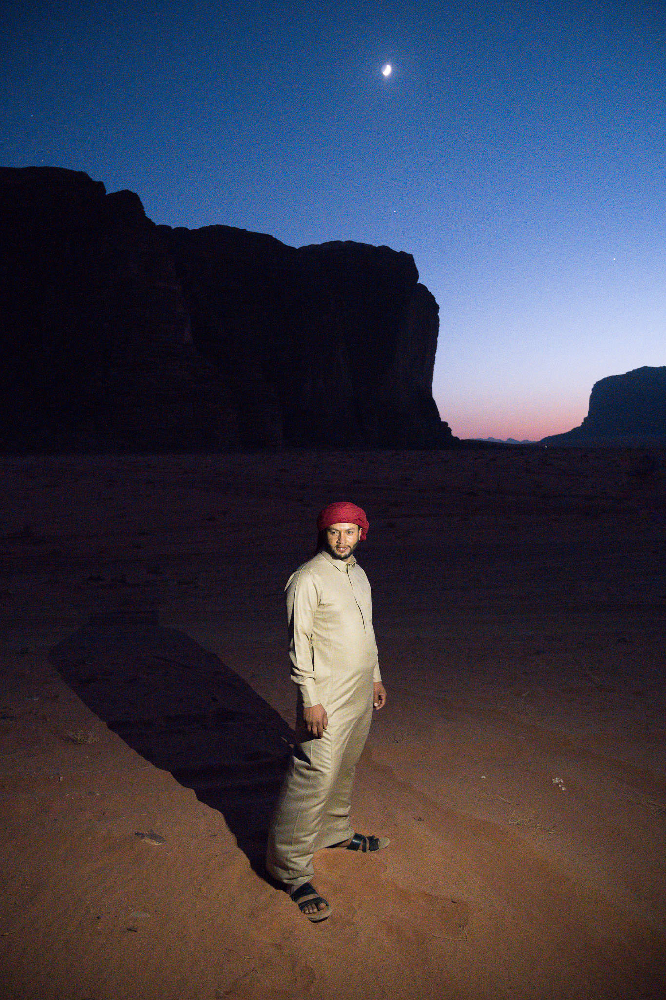
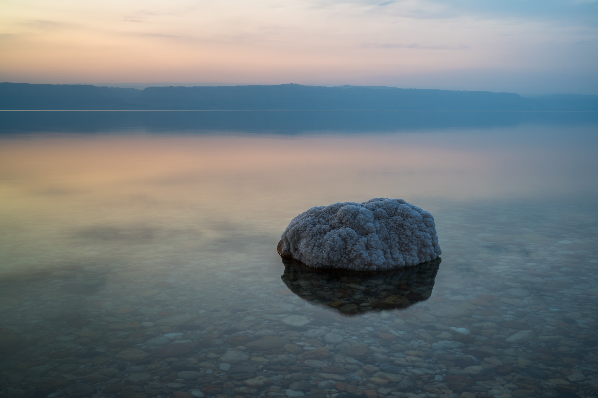

Advance Photography and Videography
Have a Vision in Mind
The first step in making a successful photo is to have a plan – a vision – an idea. In your mind’s eye, see the image you want to capture, and then do everything possible to make it a reality. This is called visualization. It’s not an easy skill to learn. You need to be so familiar with your camera, your post-processing abilities, and your printing/output characteristics that it’s second nature to picture the final image in your head before you even capture it. That takes a lot of practice. But good visualization skills are worth it. In the field, you’ll know exactly what you can and cannot do to improve a photo in post-processing. You’ll see ahead of time which elements of the image are going to annoy you later – and how to deal with them as best as possible in the field. You’re thinking about the best possible version of a photo, then doing everything you can to make it a reality. Every decision you make in the field should be in service of your vision.
Make Conscious Decisions
You have a large number of decisions to make each time you take a photo. Many of them are automatic or obvious, and they only matter occasionally (like deciding to change your memory card). But some decisions impact every photo, even if they slip behind the scenes all too often. Ideally, you’ll want to bring as many subconscious decisions to the surface as possible. Every choice in photography is an opportunity to push the photo closer in the direction of your vision. This isn’t just about composition or creativity; your technical decisions also have a huge impact on your photos and their mood. I’m fond of saying that every technical choice is really a creative choice in disguise – because it is. The important thing is to not let these decisions fly by on autopilot. When you pick a particular set of camera settings, know why you’re doing so. Don’t just use a focal length because that’s what you had for the last photo. Instead, evaluate the scene in front of you and deliberately pick which focal length will meet your vision the best. And so on, for every decision you make.
Keep It Simple
Your vision for a photo is another way of saying your intended message. Which emotions do you want to convey to a viewer? What mood or ideas do you want your photo to express? This is where simplicity plays a critical role. When you’re making conscious decisions to meet your vision, remember that the emotional message won’t land if it’s hard to understand. Simplify your idea down to its essence; exclude anything from your photo that takes away from what you’re trying to say. Simplicity might just be the biggest “trick” to improving your compositions. Before you take a photo – but after you know what you want to say – look for any distractions in the frame that harm your message. Get rid of them in your composition, or minimize them as much as possible. Unless you’re doing studio photography where you have total control, some flaws will almost always appear in the image. But the sooner you recognize them in the field, the less of a problem they’ll be in the final photo. I recently was photographing salt formations at the Dead Sea around sunset. It was a beautiful location, but a dark peninsula on the left-hand side of the frame made the composition tricky. So, as the light turned good, I packed up my camera and went to the tip of the peninsula itself (thereby excluding it from the composition). I took perhaps my favorite image of the entire trip from that spot.
To Conclude
In conclusion, capturing amazing photography and videography for branding requires careful attention to lighting, composition, authenticity, and storytelling. By applying these practical solutions and experimenting with different styles, you can create visuals that not only capture attention but also build a strong brand identity and leave a lasting impression on your audience. So grab your camera, unleash your creativity, and let your visuals speak volumes for your brand.
hat can help you create stunning visuals that resonate with your audience. Let’s dive into some practical solutions for different styles.